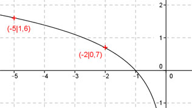

Aufgabe 96 Ergänzen Sie die Wertetabelle für den Graphen: y = ln-x x -2 -5 y 0,7 1,6 y = f(-5) = ln -(-5) = 1,6 gerundet f(x) = 0,7 eingesetzt : 0,7 = ln-x -x = e0,7 = 2,7180,7 = 2 gerundet | *(-1) x = -2 